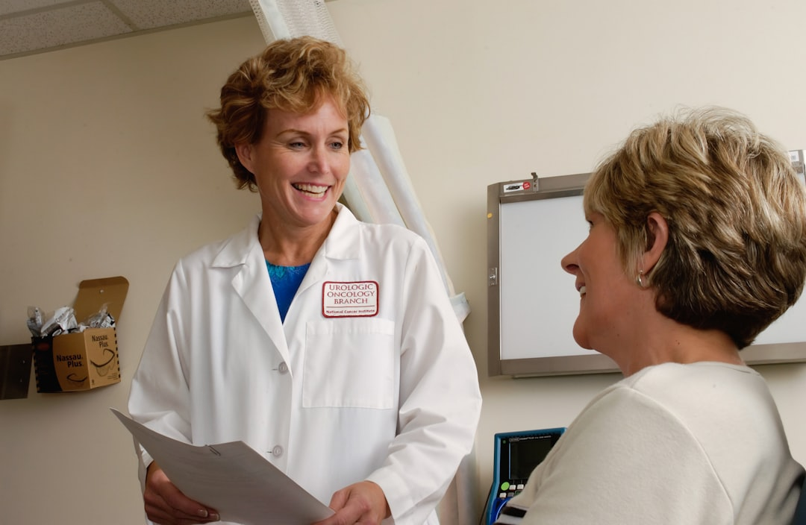

№ 01 Lubbock, Texas · Statewide telehealth
Prepare for surgery — mind & body.
Pre-surgical psychological assessment for bariatric, spinal cord stimulator, and pain-management procedures — led by a licensed psychologist with over 30 years in pain management and behavioral health.

№ 02 About us
30+ years preparing patients for successful surgery
As a licensed psychologist working in Pain Management and Behavioral Health settings for over 30 years, I help clients prepare for successful outcomes to surgery — especially weight loss surgery, spinal cord stimulators, and implantable pumps for the management of pain. This includes pre-surgical assessments and a comprehensive pre-surgical preparation program. These services are done in our office or via telehealth, meaning it is available throughout the state of Texas.

№ 03 What we do
Assessments & evaluations
Dr. Randolph is able to do several types of assessments — refined to get you into the office, through the process, and on your way as efficiently as possible.
Pre-Surgical Assessments
- Bariatric / Weight Loss Procedures
- Pain Management / Spinal Cord Stimulator Procedures
- Implantable Pumps for Pain Management
Public Safety & Licensing Evaluations
- Police
- Concealed Carry License
Specialized Evaluations & Counseling
- Immigration Hardships
Telehealth Across Texas
- Video conferencing from your device
- Self-pay evaluations & follow-up visits
- Statewide reach — no travel required for many visits
Areas of focus
Effective recovery strategies — known as prehabilitation — are now part of standard care pathways to improve surgical outcomes and minimize the risks.
Psych Assess Texas · Lubbock, TX
№ 04 What makes us distinct
Prehabilitation & psychosocial readiness
An online intake form and follow-up interview identify your strengths and possible risk factors affecting surgical outcomes, mortality, and the development of preventable disease — translated into a tailored wellness plan for the road ahead.
Unique Psychosocial Profile
The uploaded feedback station provides your own unique psychosocial profile with a tailored wellness plan preparing you for successful surgery.
Online Intake Before Your Visit
Forms and generalized intake questions are sent to your email so you complete much of your visit before stepping into the office.
Statewide Telehealth
For some self-pay evaluations and follow-up visits, coming into the office or the same city may not even be necessary because of telehealth.
30+ Years of Surgical Readiness Expertise
Led by a psychologist specialized in pre-surgical readiness assessments for over 30 years.
№ 05 Meet your psychologist
Connect with a Lubbock pre-surgical specialist
A licensed psychologist with three decades in pain management and behavioral health — meeting patients in our Lubbock office or via telehealth across Texas.
Schedule an appointment →Patrick D. Randolph
Ph.D.
Licensed Psychologist
Areas of practicePre-surgical psychological assessments · bariatric, spinal cord stimulator & implantable pump evaluation · pain management & behavioral health · concealed carry & school marshal · immigration hardship · vocational & general counseling.
Read full bio →№ 06 Getting started
Your first three steps
A refined process to get you in the door, through the assessment, and on your way.
Sign up or be referred
You sign up online or your doctor sends you as a referral. We take in your information and contact you to set up an appointment.
Complete intake online
We email you the Authorization for Use or Disclosure of Protected Health Information, the Consent to Treat, the Notice of Privacy, and the generalized intake questions for your assessment.
Visit with Dr. Randolph
In office or via telehealth, Dr. Randolph reviews your medical, social, and family history, performs objective testing, and conducts the assessment.
№ 07 Cost & insurance
Care that's covered & accessible
i. Coverage
- Many insurances acceptedWe charge what insurances will reimburse for our evaluations.
- Copay varies by planThe cost of the copay varies with every insurance.
- We'll help you verifyCall your insurance for your mental-health-evaluation copay, or ask our expert staff as they schedule you.
ii. Access
- In-office in Lubbock5147 69th St, Suite D · Lubbock, TX 79424.
- Telehealth across TexasEnter the waiting room from your device, sign in at appointment time, Dr. Randolph connects with you then.
- Self-pay friendlyFor some self-pay evaluations and follow-up visits, coming into the office or the same city may not be necessary.
- Office hoursMonday through Friday, 8 AM – 5 PM.
№ 08 Common questions
Good to know
You sign up or your doctor sends you as a referral to our office. We take in your information and then contact you to set up an appointment. We'll send some forms to your email — the Authorization for Use or Disclosure of Protected Health Information, the Consent to Treat, the Notice of Privacy, and the generalized intake of questions for your assessment. When you come into the office, we'll give you further objective testing to assure that we have an accurate view of how things are, which we will score and enter into our secured and encrypted system. Dr. Randolph will then visit with you to go over everything and perform the assessment.
Typically, the visit consists of reviewing your medical history. It also involves a social history, family history, information about previous alcohol or substance use, and what kind of psychological treatment you may have had in the past. The conversation remains confidential between you and your psychologist, except to share the information with your surgeon in the signing of a release form.
Telehealth simply means healthcare administered via video conferencing. Simply enter the waiting room from your device, sign in at the time of your appointment, and Dr. Randolph will connect with you then.
Certain parts of the procedure must be done in person, as required by insurances, but you may complete much of your visit before you even come into the office. For some self-pay evaluations and follow-up visits, coming into the office or the same city may not even be necessary because of telehealth.
We charge what insurances will reimburse for our evaluations. The cost of the copay varies with every insurance. You can call your insurance to find out what your copay is for a mental health evaluation, or you can ask our expert staff as they schedule you for your visit.
We do accept many insurances, such as AETNA, Humana, Value Options, Medicare, Medicaid, Amerigroup Medicaid, BlueCross and BlueShield, CIGNA.
№ 09 Patient registration
Request an appointment
Sign up online or have your doctor send a referral to the office, then call to schedule.
Sign up online or have your doctor send a referral — then call (806) 771-8808 to schedule.
5147 69th Street, Suite D · Lubbock.